Imposed flow
Re = UH / ν
Inertia relative to viscosity. The source reports Re ≈ 0.5 at the nominal process condition.
MASTER'S THESIS · UNIVERSIDAD DE COLIMA · 2018
From Reynolds, Grashof and Richardson numbers to a precursor-placement decision—and the microstructures grown inside the real reactor.
MY WORKFormulated and built the CFD study, designed the parameter sweeps, checked the underlying physics and connected the simulated flow structures with experimental synthesis outcomes.
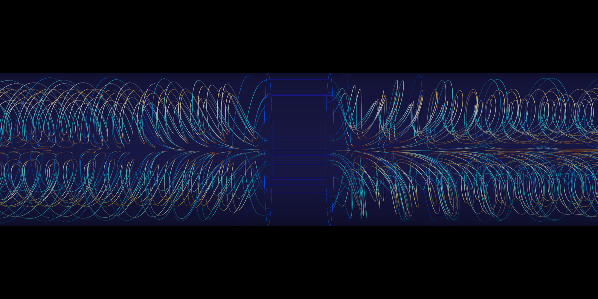
01 / THE PHYSICAL PROCESS
The engineering problem was not simply to obtain a temperature contour. It was to understand the transport mechanisms governing where ceramic fibers grow, without disturbing the reacting atmosphere.
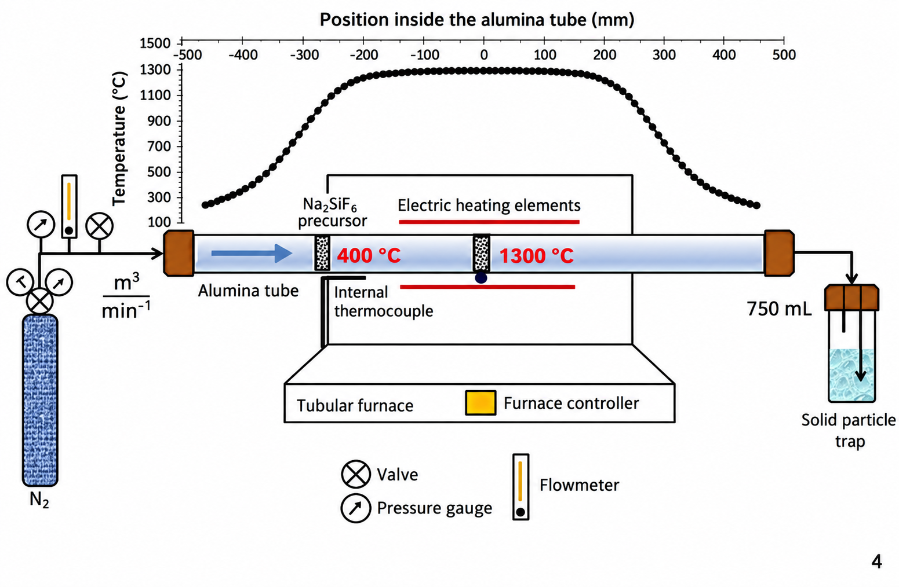
A 1.2 m alumina tube has a 25 mm inner diameter and a central 450 mm section heated to 1300 °C. Nitrogen passes a porous Na₂SiF₆ precursor and a SiC preform; precursor decomposition supplies gaseous species for fiber growth.
The precursor position had been chosen empirically. Internal probes during synthesis would disturb the flow or compromise the atmosphere, so the temperature and circulation around the porous bodies had to be reconstructed numerically.
Two questions shaped the study: does injected nitrogen actually control the internal convection, and where should the precursor sit within that thermal-flow field?
The CFD contribution was the flow/heat-transfer model and its recommendation. The reactor, synthesis chemistry and material characterization belonged to a collaborative experimental program.
02 / THE CENTRAL ENGINEERING IDEA
Re, Gr and Ri turn the operating conditions into competing physical mechanisms. Nusselt number then expresses the heat-transfer response, making the analysis useful beyond this one furnace.
Re = UH / ν
Inertia relative to viscosity. The source reports Re ≈ 0.5 at the nominal process condition.
Gr = gβΔTH³ / ν²
Thermal buoyancy relative to viscous forces. The source reports Gr ≈ 3.6 × 10⁶.
Ri = Gr / Re²
The reported process Ri ≈ 1.2 × 10⁷ places it deep in the buoyancy-dominated regime.
Nu = hH / k
Convective heat transfer relative to conduction across the characteristic length H.
Hold Gr fixed and vary inlet flow to change Re: the Richardson sweep isolates the competition between natural and forced convection across Ri = 10³–10⁸.
This is the transferable method. Select a physical ratio, vary one mechanism systematically, and read the response through both integral quantities and the structures causing them.
At the actual process condition, small inlet-flow changes have little influence on temperature. A much wider sweep is needed before forced flow becomes competitive.
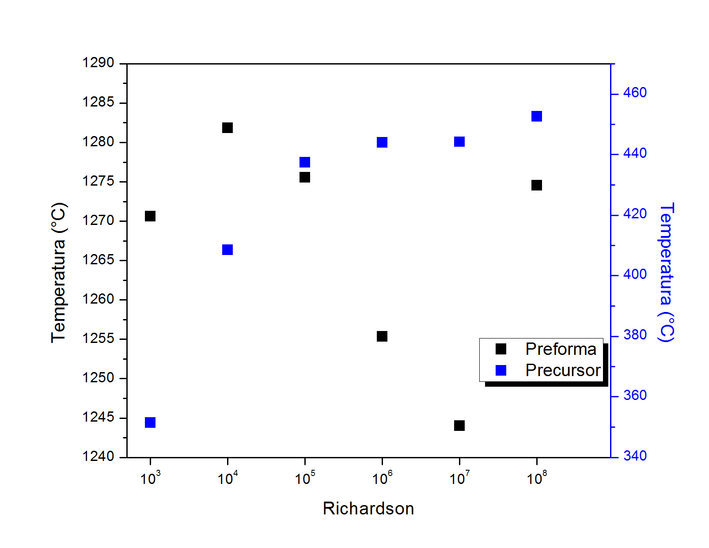
Bénard-type cells are absent in the reported low-Ri cases.
The central convection cells are only beginning to form.
The cells are developed; the nominal process lies within this regime.
The thesis analyzed Nusselt–Richardson behavior by axial region. Near the operating condition, the two end regions showed correlations of r = −0.81 and −0.72, while the porous-influenced center was weakly correlated (r = −0.1).
Ri alone is a poor descriptor where porous bodies reshape the circulation. The engineering value is both the correlation and the recognition that a different local mechanism controls heat transfer in the central region.
Transferable reasoning: the same forced-versus-natural-convection question appears in heated enclosures, cooling passages, process equipment and HVAC flows. The dimensionless framework transfers; this reactor's fitted coefficients do not become universal design correlations.
03 / MODEL DEVELOPMENT AND VALIDATION
Four incremental configurations separate the roles of buoyancy, imposed flow and the porous solids. Independent checks establish the two underlying physics before they are combined.
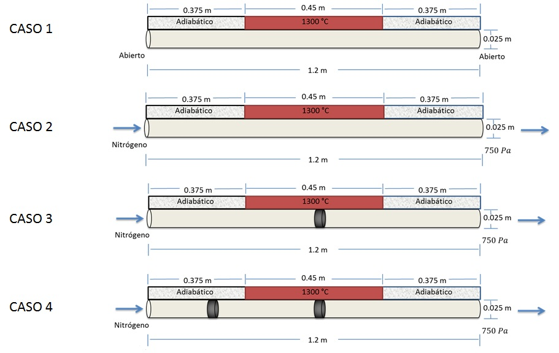
Steady laminar OpenFOAM simulations used ideal-gas density for buoyancy and homogeneous porous zones for the preform and precursor. A pore-scale Reynolds argument justified retaining the viscous Darcy resistance and neglecting the inertial Forchheimer term.
Hexahedral meshes were built in ANSYS Meshing. The open-tube and synthesis families used approximately 0.34 and 1.37 million nodes, with a centerline-temperature mesh-independence check before the parameter studies.
This was conduction/convection modeling. Radiation and reaction chemistry were outside the solved physics.
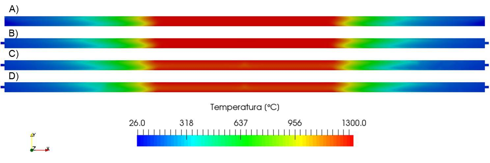
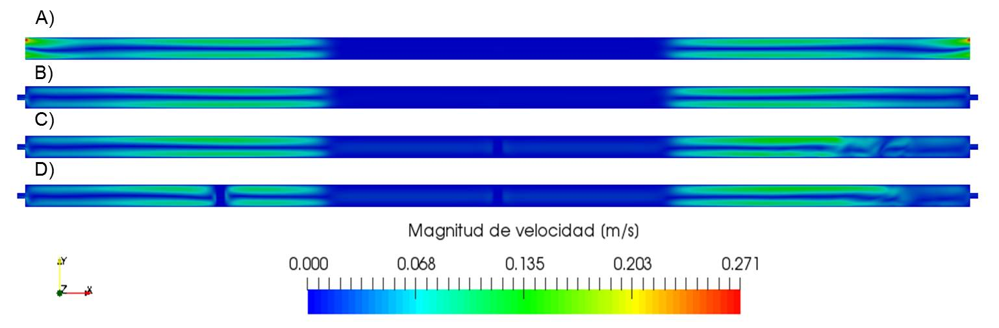
Read both fields together: a nearly unchanged temperature contour does not imply unchanged transport. The velocity field reveals the local disturbances that matter to precursor positioning and downstream growth.
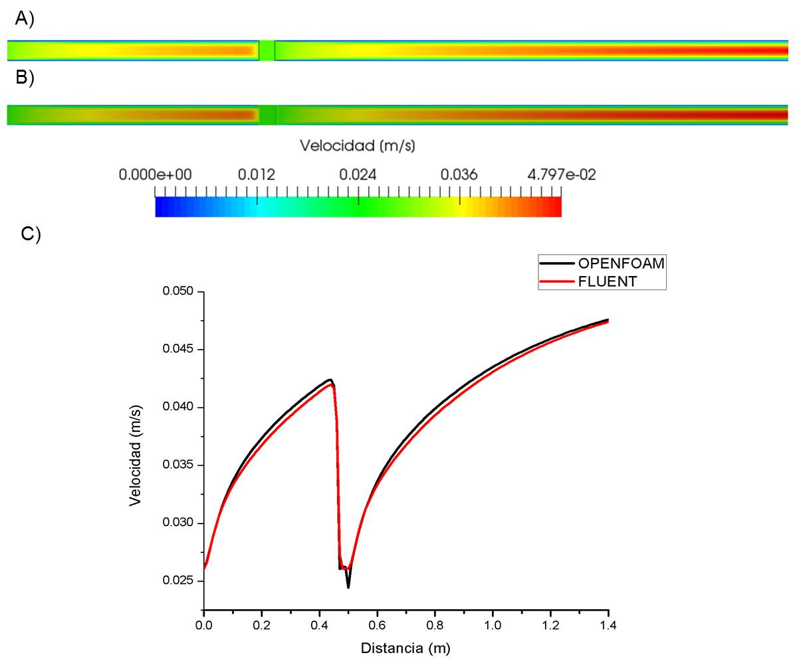
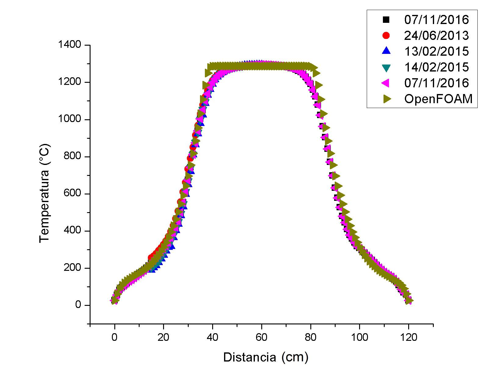
These are independent checks of porous flow and buoyant heat transfer. The combined synthesis configuration was assessed through its physical implications and experimental outcomes, rather than instrumented internally during reaction.
04 / FROM ANALYSIS TO A PROCESS DECISION
Moving the precursor changes its temperature, the preform temperature and the circulation between them. The design choice has to serve the synthesis process as a whole.
The sweep tested 24.8, 26.5, 28.7 and 30.9 cm from the inlet. Precursor temperature increased almost linearly with position, but preform temperature did not: the highest average and most uniform preform temperature occurred at 26.5 cm.
The thesis gives the precursor relation T = 49.47x − 770.84, with T in °C, x in cm and R² = 0.994. This is a fit within the tested positions, not an extrapolation rule.
At 26.5 cm, simulated precursor temperature was about 537 °C—within the independently reported 520–593 °C decomposition window. The preform was about 10 °C warmer than at the original position.
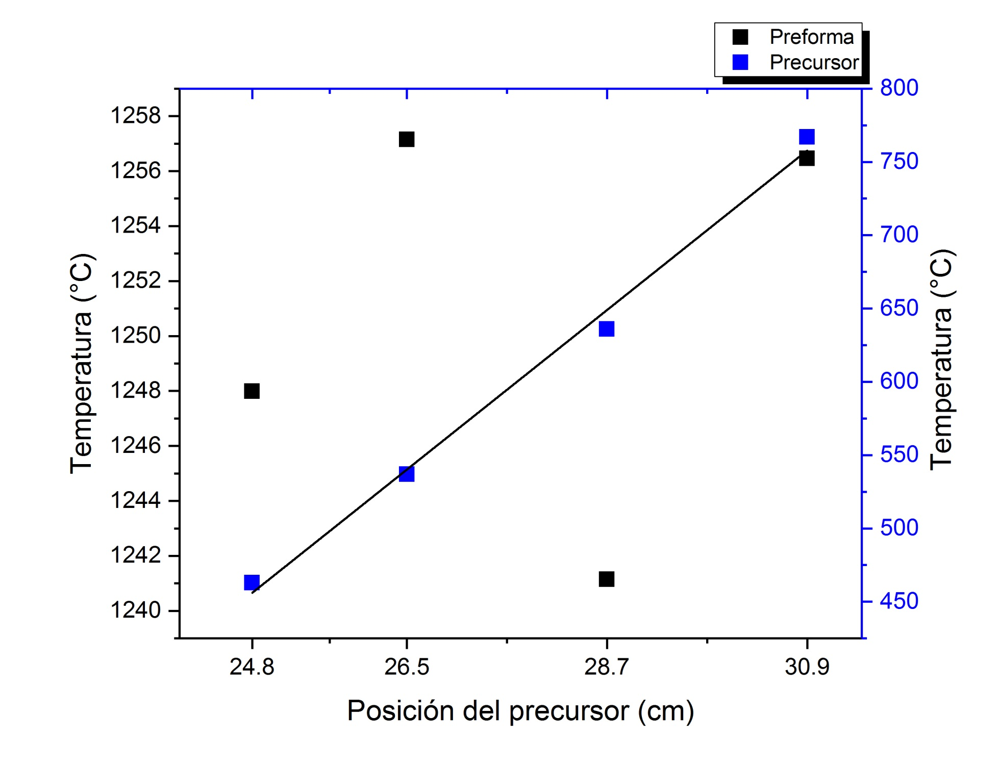
05 / THE MATERIAL OUTCOME
The numerical work becomes more persuasive when the predicted mechanism is connected to the physical reactor, the recovered material and its microscopic structure.
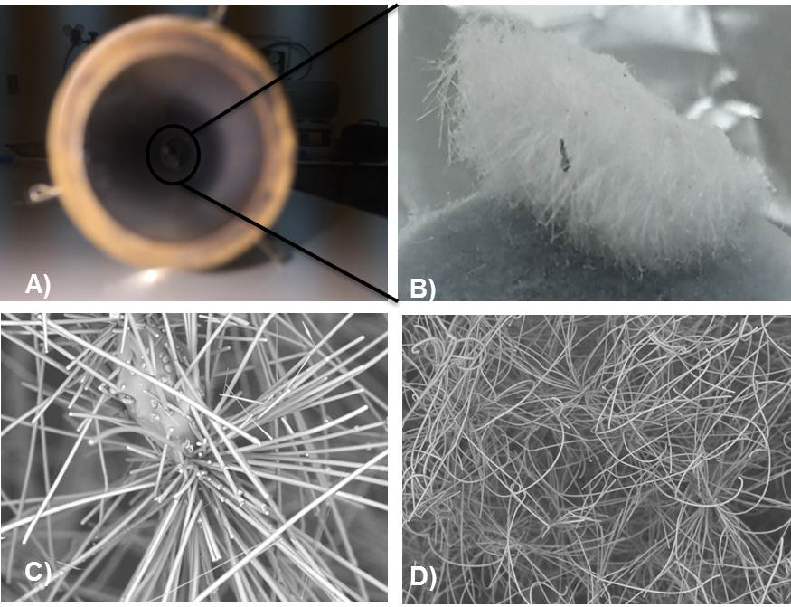
Experiments at fixed wall temperature, four-hour synthesis time, nitrogen supply and outlet condition compared the proposed positions. Measured precursor decomposition increased from 15.0% at 24.8 cm to 51.8% at 26.5 cm.
The source reports the densest Si₃N₄ fiber growth at the recommended position. Growth became sparser and more fragile at the more central positions, reinforcing that hotter precursor conditions alone do not define the best process.
Recovery of Bénard-type cells downstream of the preform was linked to the face with the greatest fiber growth. A separate growth zone on the tube was interpreted through the interface between the two convection patterns.
These are experimentally observed outcomes interpreted using CFD—not reaction yields computed by the flow solver.
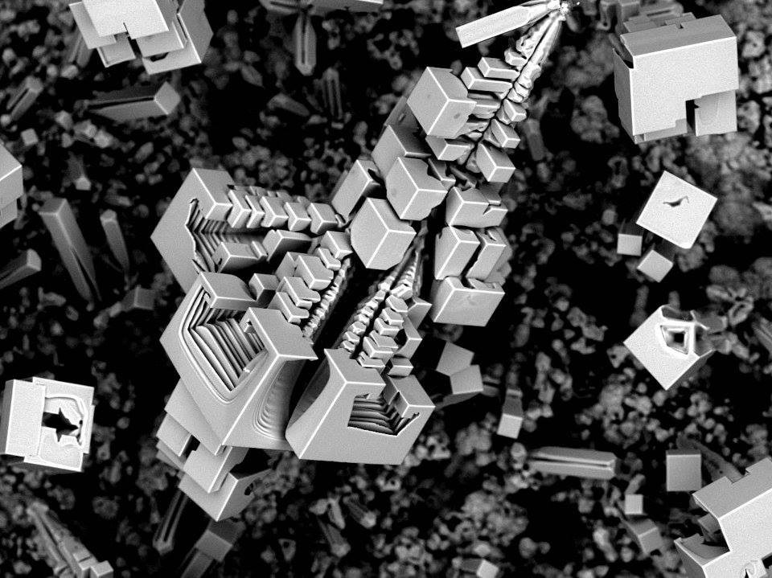
FIRST PLACE · NANOARTOGRAPHY 2017
The Space Base captures cubic NaF microstructures from the CVD synthesis process. It received first place in the 2017 NanoArtography competition.
The micrograph connects this modeling project to the material world it investigated. It is NaF, distinct from the target Si₃N₄ fibers shown above.
View the official award record ↗WHAT THIS WORK BRINGS TO ANOTHER PROJECT
The demonstrated capabilities are the reasoning, model construction and checks used to reach the recommendation.
Designed a fixed-Gr, variable-Re campaign and interpreted both Ri-dependent behavior and the regions where it breaks down.
Transfer: Mixed-convection assessment in enclosures, ducts, cooling passages and process equipment.
See the engineering evidence ↑Built four incremental configurations and justified ideal-gas buoyancy and a Darcy porous resistance model.
Transfer: Choosing the required physical complexity in thermal systems and porous components.
See the engineering evidence ↑Used mesh sensitivity, a commercial-code comparison and independent physical measurements.
Transfer: Establishing confidence before using a CFD model for a design decision.
See the engineering evidence ↑Connected placement, thermal conditions, circulation and observed synthesis outcomes.
Transfer: Turning parameter sweeps into an engineering recommendation with a physical explanation.
See the engineering evidence ↑All numerical results retain their thesis context. Reported Re, Gr and Ri are rounded values. The public source's compact Nu–Ri fit notation does not establish its axis normalization, so a raw-Ri fit is not reproduced here. The local/zone interpretation is retained.
The model excludes radiation and reaction chemistry and assumes steady laminar flow with homogeneous Darcy zones. The complete synthesis configuration was not directly validated by internal measurements. Public case settings do not include the original mesh connectivity.
CFD thesis: Alberto Brambila Solórzano, Universidad de Colima, 2018; supervisors Carlos I. Villavelázquez Mendoza and Carlos Escobar del Pozo. Apparatus, synthesis process and material characterization were collaborative. The award micrograph is credited to Alberto by the official competition record.
TECHNICAL REPOSITORY
Model definitions, simulation campaign, validation and complete source discussion.
Explore reactor research ↗